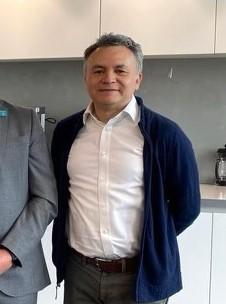
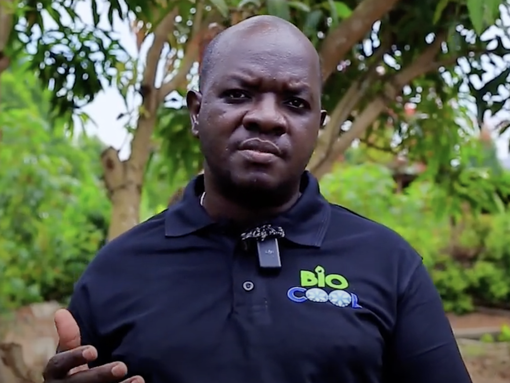
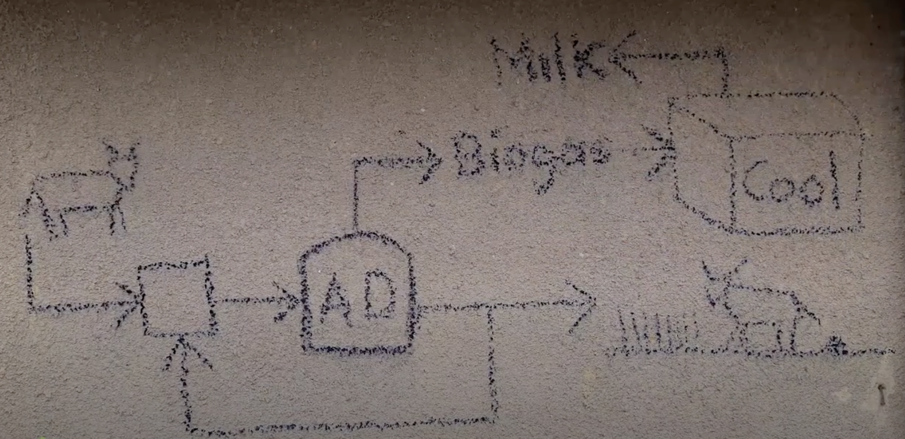
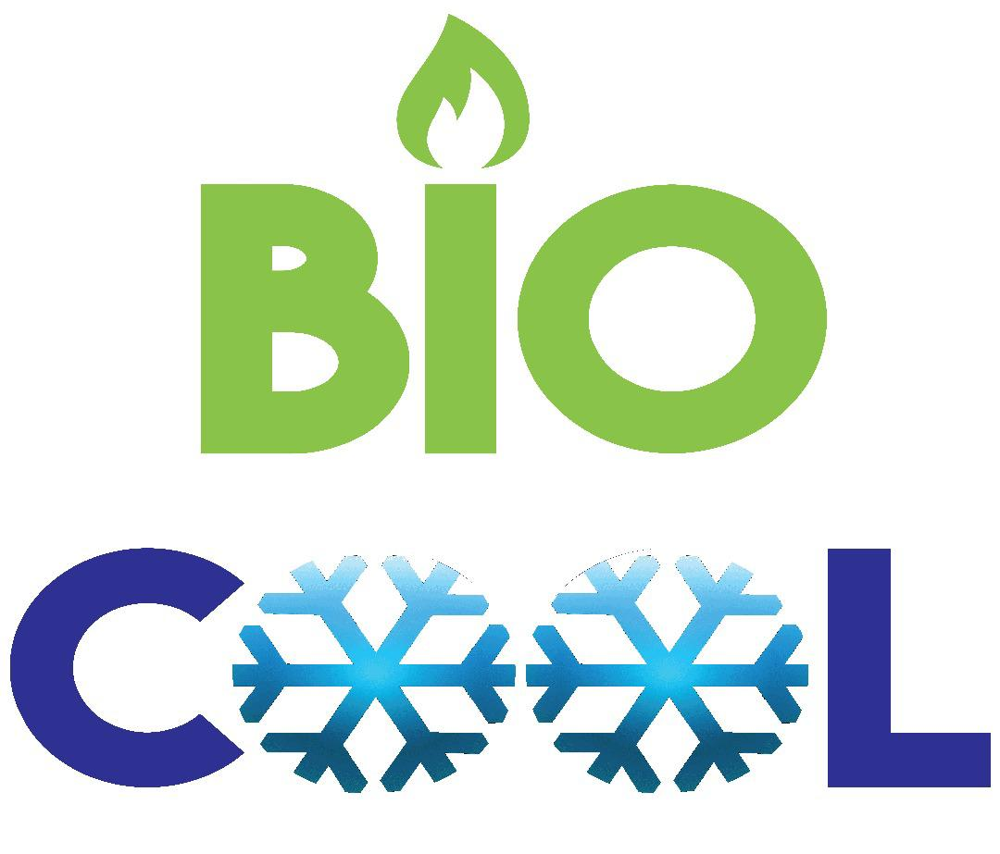
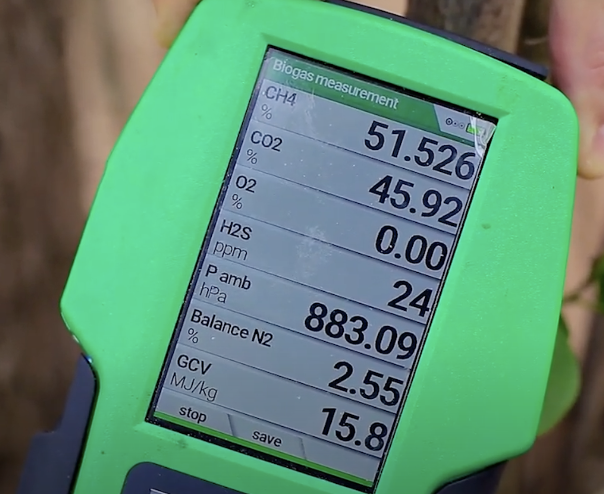
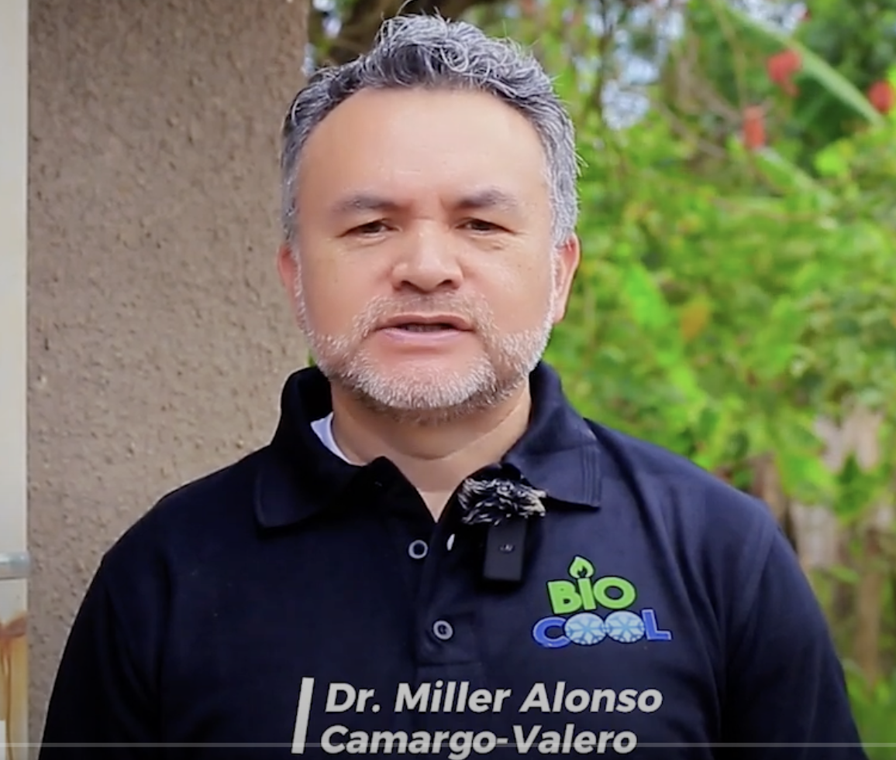

Project Overview
Start date: 1 May 2024
End date: 30 April 2025
Funder: Horizon Europe (Innovate UK) - £152,688
Partner & Collaborator: GreenHeat Uganda
Principal Investigator: Dr Cynthia Kusin Okoro-Shekwaga
Co-Investigator: Dr Miller Alonso Camargo-Valero
BioCool aims to tackle the challenges limiting the widespread adoption of anaerobic digestion (AD) technology in producing biomethane for sustainable cooling among rural communities in Uganda.
Uganda’s dairy sector contributes over 50% to the total agricultural GDP. However, around 70% of milk is sold raw through informal markets—largely due to the lack of reliable access to electricity and conventional refrigeration—leading to spoilage and substantial economic losses.
While AD technology has been promoted in Sub-Saharan Africa to address fuel poverty and spur economic growth, Uganda’s over 30,000 AD systems face barriers such as limited feedstock, inadequate process control, and high energy costs. BioCool addresses these barriers by implementing an Energy as a Service (EaaS) model, transferring the technological and economic burden to the energy provider, so farmers only pay for the biomethane they use.
Ultimately, BioCool will drive sustainable development (SDG7), particularly in off-grid and rural areas. By improving biomethane access, the project will enhance livelihoods, reduce food spoilage, and create new economic opportunities in the agricultural sector.

BioCool system demonstration in the WPE laboratory
Research Team


Dr. & Partners
Co-Investigator
The BioCool initiative involves a multidisciplinary team of researchers, along with collaborators from GreenHeat Uganda and the Ministry of Energy and Mineral Development Uganda, working to advance user-defined Cooling as a Service (CaaS).
Key Research Areas
Anaerobic Digestion (AD)
Optimizing AD processes to convert organic materials (e.g., animal manure, market waste) into biomethane, a clean fuel that powers off-grid cooling systems.
Energy as a Service (EaaS)
Shifting the techno-economic burden from smallholder farmers to energy providers, allowing end users to pay only for the fuel consumed while ensuring reliable service.
Cooling as a Service (CaaS)
Extending the EaaS model to include refrigeration, enabling cost-effective, off-grid cooling solutions for rural and urban agricultural markets.
Food Security & Livelihoods
Enhancing dairy and other agricultural value chains by reducing spoilage, improving incomes, and expanding market opportunities for farmers in Uganda.
Research in Action
A documentary showcasing the BioCool project—from stakeholder engagement and lab experiments to a successful pilot study—highlights how biomethane-powered cooling transforms off-grid dairy farming and beyond. The team also explores potential for urban cooling centers relying on diesel fuel, working closely with Uganda’s Ministry of Energy and Mineral Development to provide tailored, user-defined Cooling as a Service (CaaS).
Research Gallery




Key Findings
Reduced Milk Spoilage
Reliable off-grid cooling dramatically decreases post-harvest losses in the dairy sector, improving food security and farmers’ incomes.
Scalable Technology
BioCool’s EaaS model shifts operational costs to providers, making AD-based cooling more feasible for smallholder farms and large urban centers alike.
Environmental Benefits
Biomethane from organic waste cuts reliance on diesel fuel, reducing greenhouse gas emissions and fostering cleaner energy solutions.
Extended Applications
Beyond the dairy sector, BioCool’s technology shows promise for preserving produce across various agricultural value chains, benefiting rural and urban markets.
Related Publications
(Publications related to BioCool will be listed here as they become available.)
Industry Partners
BioCool collaborates with local and international partners to facilitate knowledge transfer and accelerate real-world implementation of biomethane-fueled cooling solutions.
GreenHeat Uganda
Interested in BioCool?
For more information about the BioCool project, opportunities for research collaboration, or access to our technologies, please get in touch with our team.